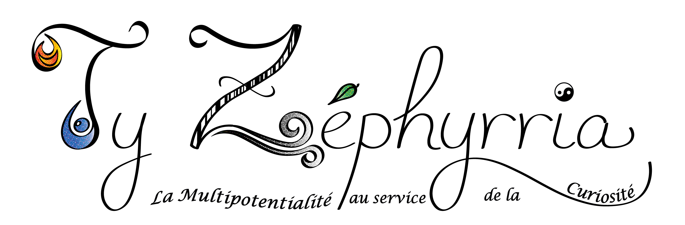

TY ZEPHYRRIA est née de la rencontre entre la curiosité et l'inspiration, portée par un souffle de créativité permanent.
Vision Artistique : Des bijoux fantaisies façonnés à la main, des gravures délicates et des illustrations qui capturent l'instant.
Vision Cérébrale : Un regard de photographe affûté par 15 ans de pratique et le goût du partage à travers l'auto-édition.
Vision Fonctionnelle : Un accompagnement graphique et informatique sur mesure pour donner vie à votre identité visuelle et logistique.
"Ne rêve pas ta Vie, vis tes rêves"...(A. de St Exupéry)
Laissez place à
la
candeur, l'émerveillement, les rêveries et venez découvrir mon univers sous ses multiples
facettes.
![[Image de Créations artisanales]](assets/0-accueil-valeurs-qui-suis-je/boutique-creations.png)
![[Image de Photographie]](assets/0-accueil-valeurs-qui-suis-je/boutique-photo.png)
![[Image de Graphisme]](assets/0-accueil-valeurs-qui-suis-je/boutique-graphisme.png)
![[Image de Livre]](assets/0-accueil-valeurs-qui-suis-je/boutique-auteur.png)
Pourquoi Ty Zephyrria ?
"Ne rêve pas ta Vie, vis tes rêves!"
Passionnée et curieuse dans un certain nombre de domaines, notamment celui de la création, j'ai fondé Ty Zephyrria pour réunir mes différentes facettes artistiques et autres potentiels sous une même énergie.
Fascinée et inspirée par le monde animal et la nature, il m'était assez évident d'en faire mon fil conducteur avec les 4 éléments :
- Le feu pour l'ardeur, la curiosité et la passion artistique.
- L'air pour l'intuition et l'inspiration de la liberté cérébrale.
- La terre pour l'enracinement logique, la cohérence et la fonctionnalité dans un environnement concret.
- L'eau pour la fluidité, la cohésion et la bienveillance de l'altruisme.
Mon parcours de 15 ans dans l'image me permet aujourd'hui de vous accompagner avec une vision globale, qu'il s'agisse de créer un bijou qui vous ressemble ou de construire votre propre identité visuelle personnelle ou professionnelle.
Le tout dans une énergie vivante authentique et en perpétuel émerveillement, telle une Divergeante ou un Caméléon (^^ pardon, j'adore ce film et cette série, c'était trop tentant...).
Qui suis-je ?
Passionnée et curieuse dans un certain nombre de domaines, notamment celui de la création, j'ai fondé Ty Zephyrria pour réunir mes différentes facettes artistiques et autres potentiels sous une même énergie vivante: la nature et ses 4 éléments.
C'est pourquoi début décembre 2025 j'ai eu l'envie soudaine de transformer cette énergie par la créativite, ou de la canaliser dans une micro-entreprise.
"Ty Zephyrria" est en réalité un acronyme qui me représente :
- T = Tycorn, mon pseudo instagram photo depuis quelques années maintenant.
- Y = Yech'mat.
- Z = Zèbre, représentant les animaux, la nature, la Terre.
- E = Engagée dans divers projets humanitaire ou de solidarité.
- P = Phoenix, symbole du feu, de la renaissance, des vies multiples et surtout le nom de mon groupe de guitare-voix "Braizhe de Phoenix" que je vous invite à visiter sur instagram.
- H = Humanité...croyons-y encore!
- Y = Yin-Yang, reflet de l'équilibre, symbole de la Vie, de l'énergie vivante, fondement de Ty Zephyrria.
- R = Rêveuse...comme un enfant
- R = Respect...tout le monde le mérite et le doit à son prochain.
- I = Indomptable comme les zèbres! ^^
- A = Alyzée (rappelant le Zéphyre, vent maritime) c'était le nom du voilier sur lequel j'ai fait mes premiers pas vers le large, l'aventure, la liberté dans les voiles sur l'immensité marine, conquérante de...la baie où j'allais en vacances! Mais cétait déjà dingue!!)
Etant petite justement, j'étais de nature très vive, curieuse et dynamique, pleine d'envie de découverte et bavarde. Tout cela ne m'a jamais quitté. Mais pourquoi garder toutes cette énergie confinée ?
Pour tenter de m'expliquer cela, je pensais avec toute la naïveté d'un enfant que j'étais ainsi pour compenser le handicap mental de ma grande soeur qui a de fait des difficultés à s'exprimer...ou peut-être est-ce elle qui a fait qui je suis aujourd'hui ? Qui sait...?
..."Qui garde son âme d'enfant ne vieillit jamais"... Laissez-vous aussi place à la candeur, l'émerveillement, les rêveries et la découverte.